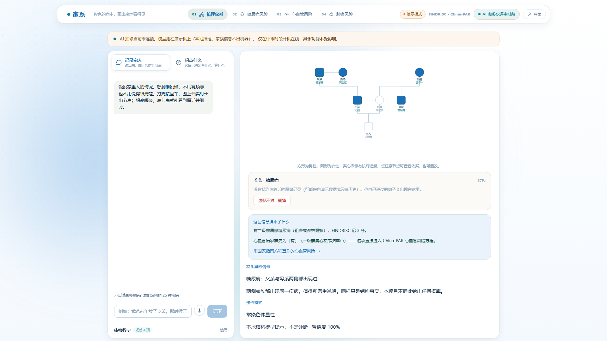
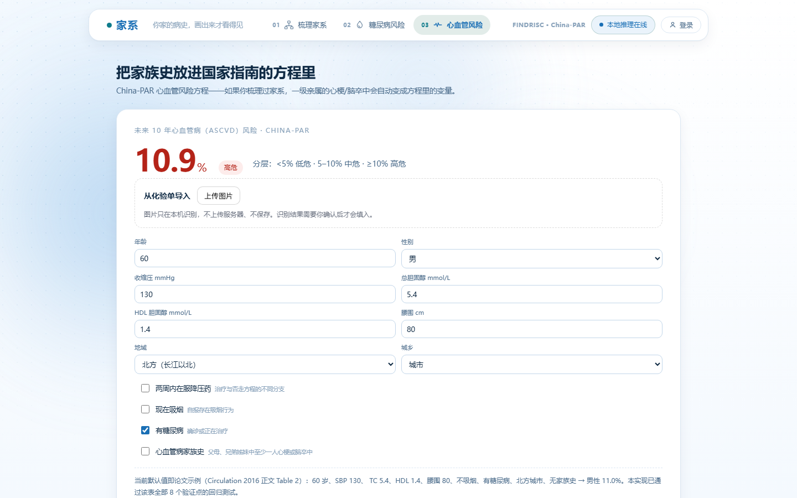
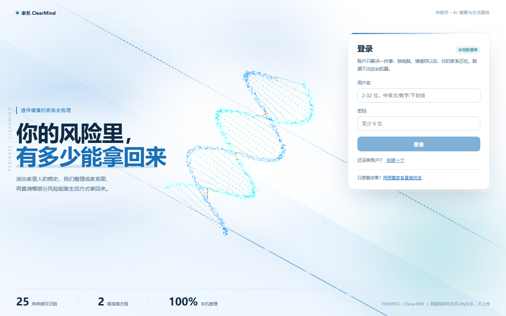

一次常规体检之后，用户手上会有三样东西：一份写着「未见异常」的报告、一份勾了「有 / 无」的问卷、一句「多运动、少熬夜」的建议。三样东西各自都不算错，但合起来漏掉了同一件事——家里人的病史。
| 环节 | 它做了什么 | 它漏掉了什么 |
|---|---|---|
| 体检报告 | 只解读当次检验指标 | 不看你父亲 52 岁放支架、你外公是脑溢血走的 |
| 医院问卷 | 把家族史压成「有 / 无」两格 | 谁患病、几岁发病、几个亲属——三件最关键的事全部丢掉 |
| 健康建议 | 说「要多运动」 | 从不告诉你「这么改，到底能拿回多少」 |
而家族史恰恰是临床用了六十年的东西：在三套公开风险方程（FINDRISC 糖尿病、China-PAR 心血管、PLCOm2012 肺癌）里，它都是方程里的一个变量。它免费、易得、解释力强，却几乎没有被结构化地记录过。
一句话：用户说一句「我妈高血压，我舅舅糖尿病，我外公脑溢血」，系统把它整理成一张结构化家系图，算出他的风险里有多少是能拿回来的，并给出这周就能做的一步。
核心概念是可回收风险：把 10 年风险拆成两半——能改的（BMI、腰围、体力活动、蔬果摄入）与改不了的（年龄、性别、家族史、正在服用的降压药）。示例数据里，33% 的风险中 7 分来自可改变因素，四项全部达标可以降到 4%；剩下的 9 分改不了，界面会明确写出「也不该由你自责」。
| 页面 | 做什么 | 关键点 |
|---|---|---|
/chat梳理家系 | 口述录入 + 家系图实时生长 | 节点可点开看到「依据：你第 N 轮说的原话」，也可直接删除后重说；支持语音输入 |
/糖尿病风险 | FINDRISC 16 分制 + 可回收拆解 + 反事实滑块 | 滑块只作用于「可改变因素」，右侧数字实时重算 |
/cvd心血管风险 | China-PAR 10 年 ASCVD | 家系图里的一级亲属心梗/脑卒中自动勾上「心血管病家族史」 |
/lung肺癌风险 | PLCOm2012 6 年风险 | 吸烟量（包年、戒烟年数）与家族史同时进方程；只对曾经吸烟者出数 |
/login账户 | 可选：换电脑后家系还在 | 不登录也能用全部功能，账户只解决「同步」 |
三步使用路径：① 说 —— 像聊天一样说家里人的病，想到谁说谁；② 看 —— 家系图长出节点，点节点回查原话，抽错就删；③ 算 —— 切到风险页，家族史已自动进方程，拖滑块看能拿回多少。
评审入口：https://clear.ysti.com.cn/chat?demo=1（不登录、不依赖模型，直接看完整形态）。

这张图是产品的核心主张：左边拖滑块，右边数字跟着变；下面只要求做两件性价比最高的事（每天活动到 30 分钟 +2 分、腰围降到 94 cm 以下 +3 分），其余等这两件稳住了再说。


三个页面共用同一份家系数据：在 /chat 录入一次，家族史就以「有 / 无 + 一级亲属患病情况」的形式进入三套方程。这是本作品与「又一个风险计算器」的区别——计算不稀缺，把家族史变成结构化输入才稀缺。
| 角色 | 真实诉求 | 对应设计 |
|---|---|---|
| 30–55 岁普通用户 | 想知道自己有没有风险、能做点什么；不愿意填长表、看不懂分档 | 口述录入 + 一句话一步的引导；结果用「现在 / 能拿回 / 达标后」三个数说话 |
| 家有慢病患者的子女 | 家里人说过的病史散落在记忆里，需要被记下来、以后能查 | 家系图持久化；每条病挂回原话，点节点即可核对 |
| 基层健康管理场景 | 需要能解释、能复核的风险数字，不能是「黑盒概率」 | 三套公开方程 + 依据检索 + 引用台账；结论附出处 |
/ 或 /cvd，看家族史是否已勾上、影响多少个百分点。/chat 把话说完，家系图当场长出来。| 维度 | 要求 | 落地方式 |
|---|---|---|
| 隐私 | 家族病史属敏感个人信息，不出机器 | 推理与数据库均在本机；在线演示站点不驻留用户数据 |
| 可解释 | 每个数字可追溯到方程与文献 | 系数台账 + 依据检索 + 界面「查依据」入口 |
| 可降级 | 模型不可用时主要功能仍可用 | 抽取接口返回 503 并提示；家系图 / 风险量化 / 检索不受影响 |
| 可复现 | 评委能自己跑起来、自己核数字 | 一条 pnpm test 跑完 238 用例；评测结果带 commit 入库 |
| 可接受性 | 不制造焦虑，不越界诊断 | 「改不了」的部分显式标注不怪你；所有页面注明不替代医生 |
口述是「家里人说过的病史」最自然的录入方式。系统不需要用户按格式、按顺序，也不需要说得清楚：一句「我妈高血压，我舅舅糖尿病，我外公脑溢血」会被拆成三个节点，称谓归一（妈 → 母亲、舅舅 → 母系舅父）、疾病归一到 25 种可识别病种。语音输入走浏览器 Web Speech API，识别结果直接进同一个输入框。
家系节点的每一处都挂着原文证据：点开「爷爷 · 糖尿病」能看到「没有找到这段话的原句记录」，点开刚说的那条则能看到原话；抽错了点「这条不对，删掉」。风险分数旁边有「查依据」，检索到的是已核实的知识库条目与文献出处。引用错误也留档：docs/audit.md 里保留了修正记录，不删改历史。
市面上多数产品给的是「你的风险是 33%，属于高危」。本作品在同一个数字后面追问一句：这 33 分里，哪些是你能动的？答案是 7 分。于是产品语言从「你很危险」变成「你还有 7 分可以拿回来，这周先拿 3 分」。这是产品创新，也是我们在答辩里最想传达的一句话。
很多健康应用会把「家族史：有」显示出来，但不进入计算。本项目里它是 FINDRISC 的一个计分项（一级亲属糖尿病 3 分 / 二级亲属 1 分）、China-PAR 的二值变量（含年龄交互，对年轻人边际影响更大）、PLCOm2012 的独立预测项。界面上会写清它占多少：China-PAR 里家族史的贡献约 0.6 个百分点——这个量级直接决定了「家族史单独不能吓人，但必须进方程」的产品判断。
推理全部在本机（llama.cpp + Qwen3-1.7B Q4_K_M），家族病史不出这台机器。断网也能演示；模型没启动时界面与全部计算功能照常可用，只有「口述 → 抽取」返回 503 并给出明确提示。这条降级路径是设计出来的，不是碰巧。
浏览器（Next.js 16 App Router + TypeScript + React 19）
├── /chat 口述录入 · 家系图（实时生长 / 节点可点 / 依据可查）· 语音输入
├── / 糖尿病风险（FINDRISC）· 可回收拆解 · 反事实滑块
├── /cvd 心血管风险（China-PAR，家族史自动带入）
└── /lung 肺癌风险（PLCOm2012）
│
▼ 服务端 Route Handlers
├── /api/extract(+ /stream) 口述 → 家系节点（本地 LLM · GBNF · SSE 流式）
├── /api/agent Agent 工具调用（GBNF 枚举决策 · 事实卡直渲数字）
├── /api/decision/hereditary 遗传模式判定（确定性计算，非 LLM）
└── /api/explain 依据检索（BM25，语料已核实）
│
▼
llama.cpp server（127.0.0.1:8080）· Qwen3-1.7B Q4_K_M · GPU
MySQL 8（可选：账户与会话）
/api/extract（或走 SSE 看抽取阶段）{
"persons": [
{
"id": "p2",
"relation": "mother", // 称谓归一
"sex": "female",
"lineage": "maternal", // 父系 / 母系两侧独立
"conditions": [
{ "code": "hypertension", "onsetAge": 55, "evidence": "我妈高血压" }
]
}
]
}
evidence 是刻意设计的字段：每条病都能回到原句；lineage 让父系与母系各自独立成链——这决定了舅舅与叔叔在风险传播上不等价。
浏览器 → nginx（云服务器，TLS）
→ systemd: pedigree.service
→ Next.js 16（127.0.0.1:5173，常驻）
├→ LLAMA_SERVER_URL（可选：模型）
└→ MySQL（可选：账户与会话）
站点常驻服务器，不依赖任何本地机器；服务器 1.6 GB 内存放不下 1.2 GB 模型，因此模型缺位时按设计降级——页面与全部计算功能可用，只有「口述 → 抽取」返回 503。这是取舍，也是我们写在 README 与包内说明里的事实。
| 方案 | 优势 | 结论与理由 |
|---|---|---|
| 云 API（GPT-4 级） | 抽取质量高、无需本地算力 | 不采用：家族病史出网；评审期受网络与额度影响 |
| 7B–14B 本地量化 | 质量更好，仍在本机 | 不作默认：显存与内存成本翻数倍，演示机与服务器装不下，冷启动更慢 |
| Qwen3-1.7B Q4_K_M | 1.8 GB 显存、启动 1.7 s、0.11 s/句 | 采用：全本机可行，短板用「约束解码 + 三层校验」在产品层补 |
| 纯规则 / 正则 | 确定性、零成本 | 不作为主抽取：中文口述表达太散（「老爹」「我外婆是脑溢血走的」），召回不足；用作校验层 |
用语法把输出空间限制成「家系节点数组」，称谓、性别、疾病编码都收敛成枚举。效果是模型不可能输出多余字段、中文键名或半截 JSON。示例：
root ::= persons
persons ::= '{"persons":[' person ("," person)* ']}'
person ::= '{"relation":' relation ',"sex":' sex ',"conditions":[' ... ']}'
relation ::= '"father"' | '"mother"' | '"maternal-uncle"' | ...
sex ::= '"male"' | '"female"'
把自由度留给内容、把格式交给语法，是 1.7B 能在本任务上可用的前提。
| 层 | 做法 | 解决的失败模式 |
|---|---|---|
| 分句抽取 | 按标点分句，逐句抽，再按 (称谓, 病种) 合并去重 | 长句里漏掉第二个、第三个亲属 |
| 词表校正 | 句中只有唯一称谓候选时，以词表为准 | 模型把「老爹」抽成伯叔、把「外婆」抽成奶奶 |
| 证据校验 | 抽出的病名必须能在原句里字面命中 | 模型凭空多出一个原文没提到的病 |
此外还有两个兜底：否定句检测（「我妈没有高血压」不计入）、泛称回退（「癌症」「心脏不好」标记为 unspecified 并提示）。
Agent 层每次工具调用返回的是结构化事实对象，界面直接渲染它，模型只负责选择调用哪个工具、组织解释文字。判据很硬：1.7B 在复述时会把「可回收 7 分」说成「可回收率 4%」——两个数字都在上下文里，但语义被调换了。健康场景里这种错不能靠提示词兜，只能从架构上让它不可能发生。
遗传模式判定走的是 typed decision 协议（一次前向、不生成 token）：请求里写清候选（五种模式），回答只有两样东西——选中的选项与每个选项的概率分布，output_tokens 为 0，置信度是模型当场给的概率。客户端还做硬校验：选项必须在候选内、概率之和必须为 1（容差 0.02），不满足整条丢弃、不进入判断。
| 方法 | 参数规模 | 30 条均衡样本准确率 | 其他 |
|---|---|---|---|
| 通用决策模型（对照） | 18.5 G | 40% | 隐性 / X 连锁 / 线粒体三类全判错；单次 6.3 s；ECE 0.401 |
| 12 维结构信号 + 逻辑回归 | 2.3 K | 96% | <0.1 s；可复算、可审计；换任何模型结论不变 |
我们做过微调 A/B：同一套留出集，微调产物与基座量化版对比，实测无增益，因此线上仍是基座量化版。这件事写在 README 与 docs/准确性说明.md 里，避免后来者误用 extract-Q4_K_M.gguf。把「试过但没用」写清楚，比只报好结果更可信。
| 指标 | 数值 | 测量方式 |
|---|---|---|
| 模型启动 | 1.7 s | llama-server 起到 /health 返回 ok 的墙钟时间（GPU 已预热） |
| 单句抽取 | 0.11 s/句 | 180 句留出集总耗时 / 句数，含 HTTP 与 JSON 解析 |
| 显存占用 | 1.8 GB | Q4_K_M + 4096 上下文常驻后 nvidia-smi 读数 |
| 抽取留出集 | F1 0.877 → 1.000 | 6 类 × 30 句 = 180 句；只跑一次，结果带 commit 与逐条预测入库 |
| 单元测试 | 31 文件 / 238 用例 | pnpm test（vitest），约 1.7 s 全绿；tsc --noEmit 0 错误 |
| # | 技术 | 在本项目里怎么用 |
|---|---|---|
| 1 | 约束解码（GBNF） | 把家系结构写成语法，保证输出合法 JSON；称谓、性别、病种全部枚举化 |
| 2 | 三层校验流水线 | 分句抽取 → 词表校正 → 原文证据校验；把 1.7B 的短板补在模型外面 |
| 3 | 事实卡（数字 / 措辞分离） | 风险数字由工具返回的结构化事实直接渲染，不经模型复述 |
| 4 | typed decision（JEV） | 一次前向给「选项 + 概率分布」，客户端校验选项合法性与概率归一 |
| 5 | 三套公开风险方程 | FINDRISC（16 分制）、China-PAR（10 年 ASCVD，含年龄交互）、PLCOm2012（6 年肺癌）；系数逐条登记文献 |
| 6 | 可回收风险拆解 | 每个因子标注 modifiable / fixed；反事实只允许改 modifiable，输出「现在 / 能拿回 / 达标后」三值 |
| 7 | 血缘查询与图布局 | 父系 / 母系两侧独立成链（舅舅与叔叔不等价）；按代分层布局，复杂度 O(n) |
| 8 | MCP 协议 | 三个核心工具（家系摘要 / 风险计算 / 依据检索）以标准 MCP 对外暴露，站外客户端也能接入 |
| 9 | 工程与部署 | Next.js 16 + TypeScript；站点常驻服务器、模型可选、缺位即降级；MySQL 在 1.6 GB 机器上收到 64 MB buffer pool |
技术上最值得说的一句不是「用了多大的模型」，而是「决定哪些环节不该交给模型」：结构交给语法、数字交给工具、判定交给确定性计算，模型只保留它擅长的部分——把口语变成结构化输入，以及把结论讲成人话。


| 局限 | 具体表现 | 当前应对 |
|---|---|---|
| 小模型能力边界 | 复杂长句、方言、多重否定仍可能漏抽或抽错 | 分句抽取 + 词表校正 + 证据校验三层兜底；抽错可一键删除重说 |
| 样本规模有限 | 留出集 180 句，只能支撑同分布内的结论 | 所有数字标注样本量，不外推；评测只跑一次，避免调参刷分 |
| 线上默认无模型 | 服务器内存限制，口述抽取在公网不可用 | 页面与计算全部可用；如需演示抽取，起模型并改环境变量即可 |
| 账户数据为空 | 线上库为新建，demo 账号内无预置家系 | 提供 /chat?demo=1 免登录看完整形态 |
| 非诊断工具 | 风险方程只做风险沟通 | 界面统一注明不替代医生；不做诊断结论 |
| 项 | 内容 |
|---|---|
| 团队 | 无限进步（编号 45537）· 常州信息职业技术大学 · C 组 · 3 人 |
| 协作方式 | 代码托管在 GitHub（280+ 次提交），按「抽取 → 风险引擎 → 界面 → 文档」推进；每次评测结果连同 commit 一起入库，可回溯某次结论对应哪一版代码 |
| 质量门 | pnpm test（31 文件 / 238 用例）+ tsc --noEmit；改文案后重跑 TTS 与时间线，视频与字幕由脚本生成，不手写秒数 |
| 文档习惯 | 结论与失败都记录：引用台账、审计修正记录、微调 A/B 的「无增益」结论都留在仓库里 |
| 项 | 说明 |
|---|---|
| 发表与获奖 | 本作品为首次提交，此前未公开发表、未获过奖项 |
| 是否基于其他项目 | 原创，未基于其他完整项目二次开发；使用的开源组件见下表 |
| 组件 | 用途 | 许可 |
|---|---|---|
| Next.js 16 / React 19 | 前端与路由 | MIT |
| llama.cpp | 本地推理运行时（含 GBNF 与 /v1/systemone） | MIT |
| Qwen3-1.7B | 抽取与问答的基座模型（Q4_K_M 量化） | Apache-2.0 |
| MySQL 8 | 账户与会话（可选） | GPL-2.0 |
| Kevin MacLeod 配乐 | 演示视频背景音乐 | CC BY 4.0（片尾署名） |
| 项 | 地址 |
|---|---|
| 在线演示 | https://clear.ysti.com.cn |
| 免登录体验 | https://clear.ysti.com.cn/chat?demo=1 |
| 演示账号 | demo / demo123（可登录；账号内暂无数据，完整形态用上面的 demo=1） |
| 演示视频（B 站） | https://www.bilibili.com/video/BV1ctsk6HEDH/ |
| 代码仓库 | https://github.com/NimuStudio/jiaxi |
| 完整作品 | 见报名表第 5 项（网盘压缩包） |